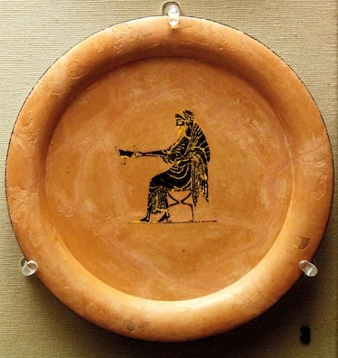

Dionysus was so much more than just the master of the vine; he was also charged with fertility, fruitfulness, theater, ecstasy, and abandon. Whether called Dionysus (his Greek name) or Bacchus (his Roman one), he is perhaps the strangest of the gods in the vast classical pantheons. Though his pagan-like cults and mysteries may seem to have existed outside the usual Greco-Roman religious and philosophical spheres, archaeological evidence in the 20th century proved that he was a fully realized god.
Photograph by ACI
Dionysus
is depicted as an older man on a sixth-century B.C. plate from the British Museum.
The son of an immortal god and a mortal princess, Dionysus’ role forged a crucial link between humanity and the divine, serving as a force of cyclical, unbridled nature who drew men and women out of themselves through intoxication. In that sense, Dionysus, a genial but wild and dangerously ravishing intermediary, represents one of the enduring mysteries and paradoxes of life.
Dionysus’ association with wine embodies this paradox. Wine is a delicious beverage with medicinal properties, but it also intoxicates. It brings liberation and ecstasy, yet, like any initiatory experience, it also introduced the risks of losing hold of identity and control.
Births & Deaths